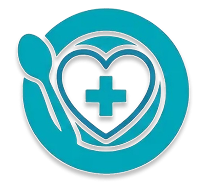
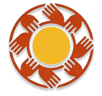
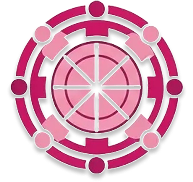

Extensão Universitária · Faculdade de Medicina
Uma proposta editorial calorosa e confiável para conectar extensão universitária, alimentação digna e cuidado contínuo.

Uma narrativa clara e contemporânea para apresentar cuidado preventivo, nutrição comunitária e confiança institucional.

Uma presença visual acolhedora que traduz tradição, serviço comunitário e partilha com grande força simbólica.

Uma direção de arte inclusiva e urbana para comunicar pertencimento, mobilização coletiva e impacto social real.